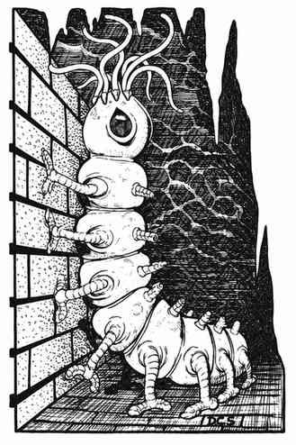

腐尸爬行者 · Carrion Crawler
 |
|
腐尸爬行者很像巨型绿色尺蠖与大型头足类动物的混合体，通常只在地下出没。顾名思义，它以腐肉为食；但它也会主动攻击活物，以确保尸体来源充足，或为产卵准备场所。它的头部防护严密，护甲等级为 3；躯干的护甲等级只有 7。
腐尸爬行者虽然体型庞大，却能凭借多条腿快速移动。它每只脚上都有锐利的爪子，能牢牢抓附表面，因此在墙壁或天花板上行走与在地面上一样轻松。它的头部有 8 条触须，会挥舞触须攻击猎物；每条触须长 2 尺，表面会分泌黏液。黏液新鲜时能使对手麻痹，目标必须通过对抗麻痹的豁免检定，否则效果生效。触须数量众多，命中机会也多，因此腐尸爬行者令人畏惧。